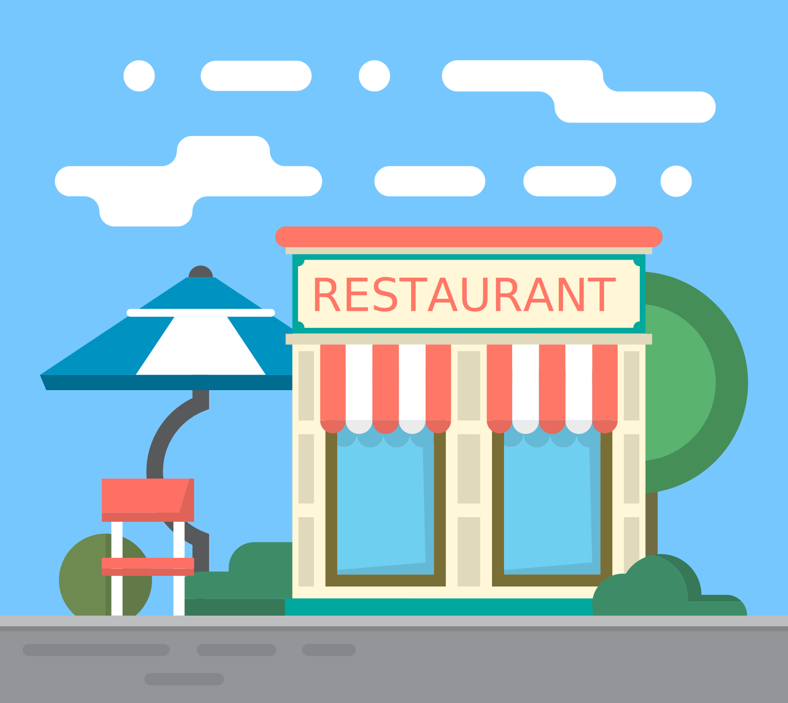

Los alimenos (donativos) son ofrecidos a las Asociaciones civiles registradas en la plataforma, para ello es importante que registremos los datos de la Asociación como: el CLUNI y RFC OSC para comprobar que realmente sea una asociacion.
DONACIÓN

Establecimiento
Dona la comida, no la tires
Si quires donar alimentos por que eres restaurante, buffet, hotel, fonda o simplemente quieres compartir alimentos a las personas que mas lo necesitan registrate ahora mismo y has tu donación.

Asociación
Recibe alimeto y distribuyelo
Si quieres recibir donaciónes porque eres Banco de alimentos, Asociación civil, Albergue, Comedor comunitario, Fundación registrate ahora mismo y entra al centro de donaciones.
¿Cómo funciona?
¿Quienes Somos?
YoComparto es una aplicación desarrollada como parte del proyecto de investigación "Propuesta de plataforma digital para la reducción de despredicio de alimentos en establecimientos" con la finalidad de reducir el desperdicio de alimento y en su lugar donar ese alimento sobrante para que personas con escases alimentaria reciba ese donativo.
ITESA
Instituto Tecnologico Superior del oriente del estado de Hidalgo
TecNM
Tecnológico Nacional de México
ODS 2 y 12
Objetivos de desarrollado sustentable de la ONU
Preguntas frecuentes
¿Quiénes donan alimento?
Principalmente establecimientos donde exista el excedente de comida como restaurantes, buffets, Hoteles, Fondas, pero tambien son invitados circuitos comerciales como mercados y personas voluntarias que deseen donar algun alimento para cutribuir a la causa.
¿Qué tipo de alimento puedo donar?
Se recomienda donar alimento enlatado o bien embolsado como: arroz, frijoles, azucar, atún, lentejas, fideos, carnes, frutas y verduras. Alimentos de este tipo son adecuados por su valor nutricional.
¿Cómo funciona el proceso de donatción?
El establecimiento realiza una publicación acordando cantidad y fecha límite en que estara disponible el donativo en la plataforma mientras alguna asociación se interese en solicitarlo, posteriormente la publicación sera visualizada por las asociaciones donde se reflejaran los datos antes mensionados, adicionalmente se visualizaran datos como el nombre del establecimiento y dirección. Si la asociación esta interesada en el donativo debera programar una fecha de recolección del alimento, donde proporcionara el nombre de la persona encargada de recolectarlo, posteriormente se le notificara al establecimiento acerca de la asociación interesada, así como el nombre del recolector y fecha de recolección.
¿Por qué los establecimientos donan alimentos?
- Excedentes de alimentos
- Producto próximos a vencer/corto vencimiento
- Paquete defectuoso
- Devoluciones de clientes
- Productos fuera de temporada
- Algunos donantes simplemente por caridad
¿Cuáles son los requisitos para que una organización social o asociación civil reciba alimentos?
Estas deben dar de comer o bien distribuir el alimento donado a personas con necesidad alimentaria, y que esten ubicadas en el radio de operación de almenos 3 establecimientos donantes o bien que esten dispuestas a recorrer ciertas distancias por el donativo, además, debe contar con Clave Única de Inscripción (CLUNI).
¿Cómo me contacto con el establecimiento que solicite su donativo?
Cuando programas la recoleta del donativo, los datos del establecimiento los podras consultar en el apartado de programación donde se le informara sobre el donativo que solicito junto con la dirección, número, y el encargado del establecimiento, con la finalidad de que pueda recurrir al establecimiento por el donativo solicitado.
¿Cómo se a que asociación le intereso mi donativo?
Cuando su donativo sea solicitado por alguna organización se le informara en la página principal de su cuenta, donde se le mostrara un aviso con los datos de la publicación del donativo que realizo junto con el nombre de la asociacion interesada, el nombre de la persona quien recolectara la donación y la fecha de recolección.
¿Cómo se entrega el donativo?
Una persona integrante de la asociacion debera recurrir a la dirección del establecimiento donde algun representante o integrante del establecimiento le hara entrega del donativo. El establecimiento ya contara con el nombre de la pesona quien recolectara el alimento que sera proporsionado por la asociación.
¿Cómo puedo acceder a la plataforma?
Primero deberas registrarte para ello solo necesitas una cuenta de correo electronico, deberas agregar tu nombre completo, una contraseñas y finalmente seleccionar el rol que deseas tener, es decir, si quieres donar o ser beneficiario.